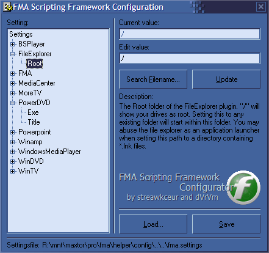

The
So we decided to create a script with a modularized concept consisting of several files, classes and plugins. The script is sperarated into plugins, which offers the functionality for each specific application, and a core part, which offers the needed functionality for developers to create plugins.
This way it is easy to create plugins for new script functionalities. A plugin developer just creates a new plugin file, which contains a plugin class, and may use the core functionality to easily handle the plugins tasks. A plugin-developer doesn't have to deal around with FMA scripting internals (Menu management, Events, Keys, Settings, ...) anymore, since he can easily use the core classes that will do that job.
The end user doesn't have to create specific script by collection script fragments and patching them together (which is a timeexpensive and risky job) anymore. He just has to copy the favorite plugins into the plugin folder and the plugin will be automagically integrated into the script.
As a handy addition we've created a small utility which will help the user to manage the settings, that the script uses. You don't have to configure you script through your phone's keyboard or even within the source files themselves. You just have to specify some values using the contributed FMA Scriptong Framework Configurator application.
We hope this piece of code may be helpful both in using and developing FMA!
Have fun!
Note: This Framework has just reached the beta-status after our internal testing. So you may still expect some changes, although they shouldn't be very serious.
The installation is fairly simple. The easiest way would be to copy all the files and directories directly to your FMA application folder, so that the main script file "fma-scripting-framework.vbs" resides beside your "MobileAgent.exe". Then you have to set the appropiate path to the script within the FMA configuration dialogue (Tools -> Options -> Script) and relaunch FMA. After the next launch FMA will put a message "[Script] Info: FMA Scripting Framework loaded!" in your Phone Explorer log and a small window will also indicate the successful load of the framework.
You may also put the files in an other folder apart from the the "MobileAgent.exe". Then you have to modify the main script file "fma-scripting-framework.vbs" and set the correct path to this file itself. You will find a line which will look like this:
ScriptFolder = ".\"
You have to set this path to the folder, where the "fma-scripting-framework.vbs" file resides. If you've copied the script files to let's say "C:\Program Files\FMA\ScriptingFramework" you have to set the line to
ScriptFolder = "C:\Program Files\FMA\ScriptingFramework"
That's it!
If you have downloaded extra plugins, you just have to copy them to the "plugins" folder. If you don't want to use some plugins you may just delete them from the "plugins" folder. You may also create a subfolder "not-loaded" (or a different name) and move the plugins, which shall not be loaded, to this folder. You can also set up a comma seperated list of plugins, you don't want to load. See "PluginManager->Don't load" in the Configurator app for more details.
Restart FMA and you're done!
If your plugins use extra ActiveX objects/.dlls (for Winamp, Volume, ICQ, ...) you have to (download and) register them in Windows. This can be done by running regsvr32 <some dll>. We've put the most usual ActiveX components into the helper folder, where you can just run the register_all.bat file, to register all this components at once.
Note: You will need at least FMA version 0.31f! The latest version is recommended.
The selection of loaded plugins is also described above.
You may easily configure the script and it's plugins with the contributed "FMA Scripting Framework Configurator", which is located in the helper\config subfolder. You can also access it through the FMA menu "Tools -> Script Configurator" or through the "Configurator" menu item in your phone's main menu.
In this program you may select each setting and view or modify it's value. Just click on the appropriate leaf in the tree, modify the value and click on the "Update" button. There will be a small description for each entry but they should be mostly self-explaining.
When you quit the configurator, it will ask you to save the settings in it's file and you're done!

The Scripting Framework will load it's settings when FMA has connected to your phone and it will save it, when FMA disconnects. The Configurator will force the script to reload its settings when you save the settings in the Configurator and FMA is connected to your phone.
It is recommended to regulary update your copy of FMA. This can be done through a built-in update functionality of FMA.
You may also look for an updated Scripting Framework or updated plugins. If you found a newer version, it should be enough to just overwrite the old files with the new ones. You may also delete your old files prior the copy of the new ones. But make sure, that you don't loose your downloaded plugins when deleting the old files!
The central place to look for updated would be the sites fma.xinium.com and the development page at sourceforge.net.